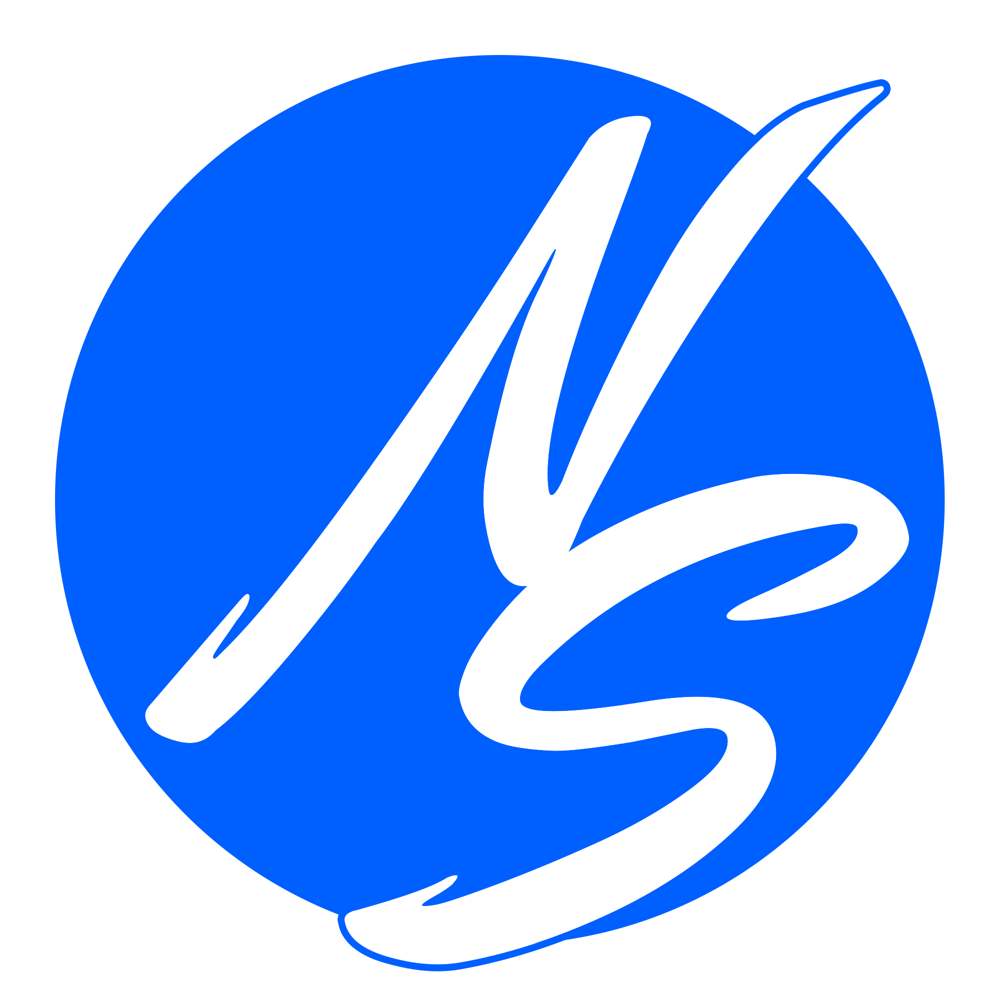

Cinq pistes qui reprennent l'ADN de NS Creative — le disque bleu et le trait au pinceau qui s'échappe du cercle — et celui de link.cg — le QR, le lien, la redirection. Chaque piste est montrée en grand, sur fond sombre, en favicon à taille réelle, en icône d'application et au centre d'un QR.

Disque bleu #0060FF, « NS » manuscrit en diagonale, le trait sort du cercle avec un liseré bleu.
Pavé encre, repère de QR, point bleu. Net, mais sans lien visible avec NS Creative.
Le test qui compte : l'onglet du navigateur et l'écran d'accueil du téléphone.
C'est le logo NS Creative, prolongé : même disque bleu, même « S » au pinceau qui sort du cercle en bas et en haut avec son liseré. Seul le « N » change et devient un repère de QR. Qui connaît NS reconnaît la famille ; qui découvre link.cg voit un QR qui s'envole vers sa destination. Il tient à 16 px et se reconnaît de loin, sur une affiche comme dans un onglet.
Pour le mot, « link.cg » en Bricolage Grotesque avec le point remplacé par un petit disque bleu : un rappel discret du disque NS, qui lie les deux. Signature d'endossement possible sous le mot : « par NS Creative ».